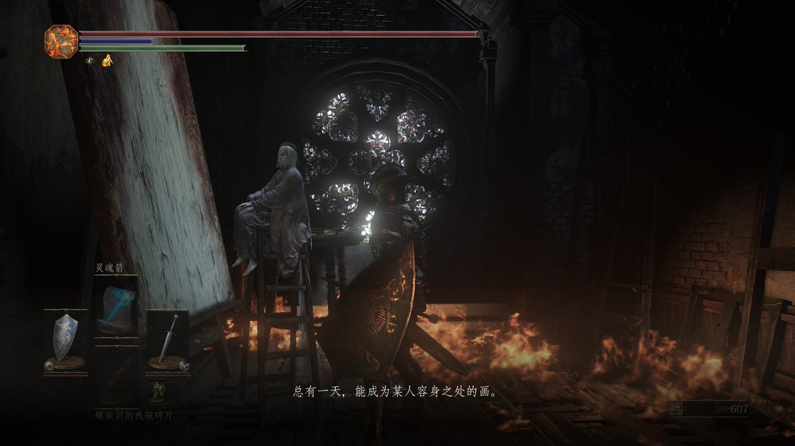
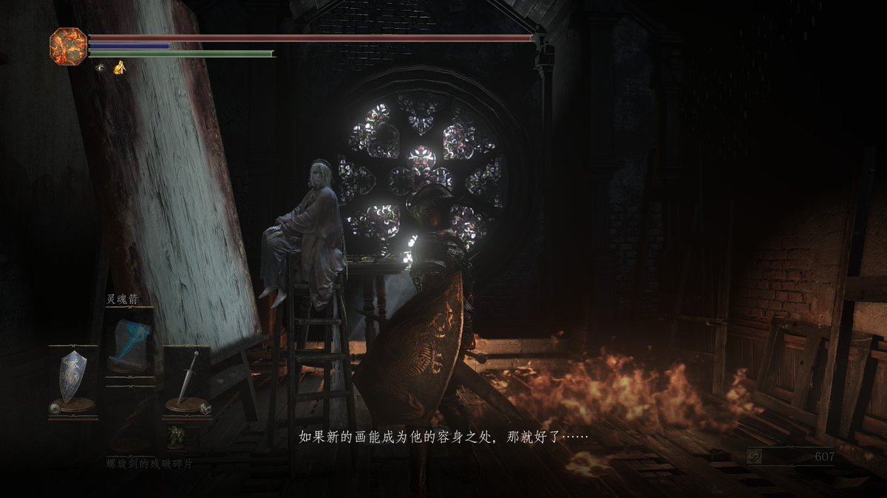
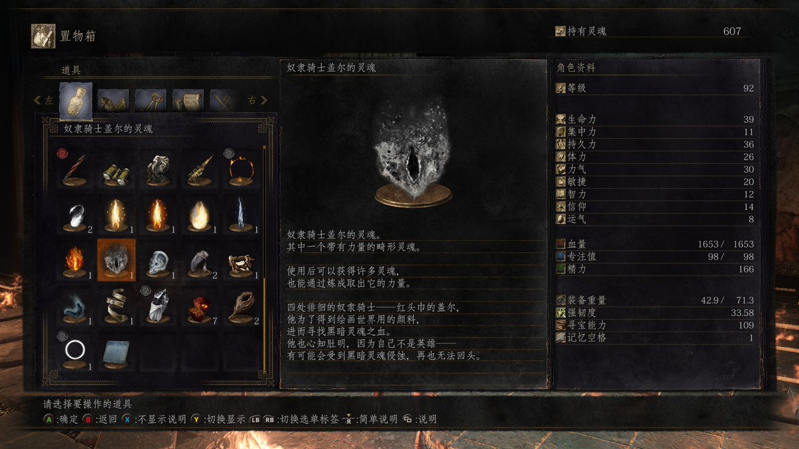

🇫🇷Rika🇪🇺🏳️⚧️
@Rikka_Ela
很难想象盖尔和米塔恩是同一个宫崎英高设计出来的boss）



🇫🇷Rika🇪🇺🏳️⚧️
@Rikka_Ela
前有悲伤，所以泪
从魂一猎龙战争结束后太阳王葛温的火之辉煌，后来不死人被抛弃后魂三灰烬在衰退时代延续残存的火焰，最后在时间的尽头，世界毁灭的前一刻，一位低贱的奴隶和一位卑微的灰烬在战斗中为黑魂系列画上了句号。辉煌散去，最后只剩下颓废和衰败，这或许也算是日本文学的一种物哀的体现吧😭 https://t.co/LhSlxLOlx9